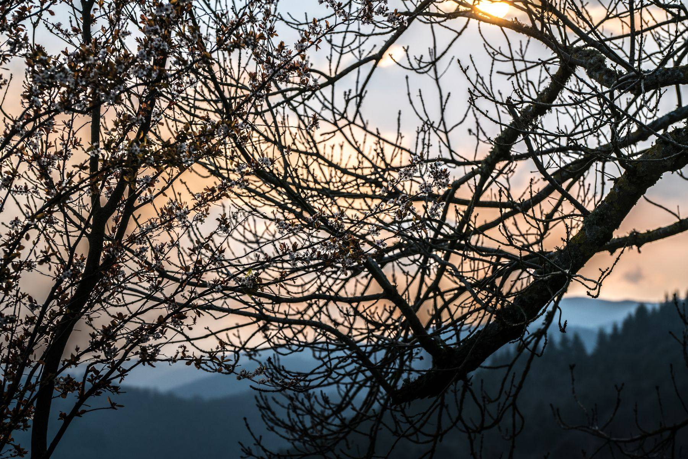

Photo © Léo DanielConcerts, marché des producteurs, balades en calèche, sorties sur le lac, randonnées gourmandes et fête votive : tout ce qui fait vivre Ceilhes-et-Rocozels au fil des saisons.
Concerts, marché des producteurs, balades en calèche, sorties nautiques sur le lac d'Avène, randonnées gourmandes, théâtre et animations : voici les rendez-vous recensés par l'Office de tourisme Grand Orb. Programme indicatif, mis à jour le 15 juin 2026 — vérifiez horaires et lieux sur la fiche de chaque événement.
Source : Office de tourisme Grand Orb
Le week-end précédant le premier lundi d'août : concours de pétanque, repas dansants et concerts animent le village. Le grand rendez-vous de l'été.
En juillet, les producteurs du pays se réunissent : l'occasion de goûter et de repartir avec le meilleur du terroir.
Tout l'été, l'épicerie-bar du village ouvre sa terrasse : apéros, concerts et soirées au bord du lac. Suivez l'actu →